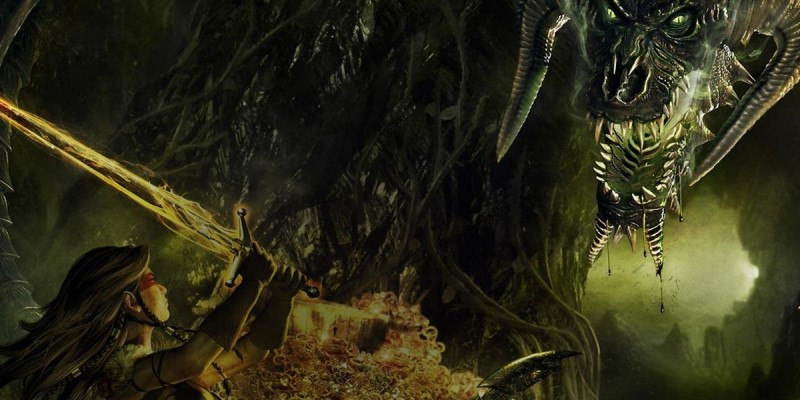

Idées d'aventures
Si vous êtes à court d’imagination, voici 100 idées de base pour lancer une aventure.
| d100 | Aventure |
| 1 | Les personnages sont mandatés par un seigneur pour mater une révolte paysanne, mais ils se rendent vite compte que celui-ci agit en tyran et que la révolte est justifiée. |
| 2 | Les personnages arrivent dans une auberge étrange et délabrée, où les rares clients sont réticents à leur parler. L'aubergiste capture en fait des voyageurs pour les donner à manger à ses clients anthropophages. |
| 3 | Un jeune noble désargenté demande aux personnages de l'aider à récupérer ses terres qu'un de ses cousins lui aurait confisquées, usurpant ainsi son titre. Mais tout cela est pure invention et le cousin est dans son droit. |
| 4 | Loin des terres elfiques, les personnages découvrent une elfe à bout de force qui prétend être pourchassée par un groupe d'orcs voulant l'offrir à leur dieu. Par contre, elle ne mentionne pas le crime qui l’a conduit à fuir ses terres natales, ni le fait qu'elle soit également traquée par des elfes de sa tribu. |
| 5 | Une bardesse recrute les personnages pour récupérer sa harpe magique qu'une guilde de voleurs lui a dérobée. La guilde a appris que l’instrument ouvrait un portail dans le sous-sol de la ville et pense y trouver un trésor, mais c’est un démon qui y est emprisonné depuis des siècles. |
| 6 | Les personnages rencontrent les réfugiés d'un village attaqué par une armée de zombis. Le clerc qui les commandait grâce à un médaillon maudit a été tué au combat et est devenu à son tour un zombi, qu’il faudra trouver parmi les autres pour détruire l'artéfact qui maintient la horde debout. |
| 7 | Un marchand engage les personnages pour escorter un convoi dont il a par ailleurs secrètement organisé l’attaque. Le marchand veut des témoins de cette attaque de brigands, qui lui servira à camoufler son réel objectif : l’assassinat d’un associé qui participe au convoi. |
| 8 | Des rêves empêchent les habitants d'un petit village de dormir. Ces rêves semblent survenir quand un étrange brouillard envahit la vallée. Le brouillard n’a rien à voir là-dedans et est simplement le fait de la présence d’un grand lac... dans lequel un jeune aboleth a élu résidence. |
| 9 | Les personnages découvrent un carrosse couché sur leur route. Parmi les morts se trouve par hasard le sosie quasi parfait de l’un d’eux, avec dans ses affaires une lettre d'héritage. L’accident a été orchestré par des cousins éloignés de la victime, autres héritiers potentiels. |
| 10 | Arrivés dans un village, les personnages sont recrutés comme "juges neutres" pour régler un différend entre deux notables. L’un a attaqué l’autre sans raison, en pleine rue, et prétend ne pas savoir pourquoi. En fait l’homme possède une épée consciente, tueuse de changeforme. L’autre en est un. |
| 11 | De nuit les personnages tombent sur un groupe d’orcs en train d'excaver un cercueil entouré de lourdes chaines. Les orcs y ont enfermé plusieurs jours durant un elfe pour l’attendrir avant de lui faire révéler le mot de passe de la cité elfe qu’ils envisagent de prendre d’assaut. |
| 12 | Un homme agonisant demande à ce qu'une missive soit portée au maire du prochain village, qui se révèle abandonné depuis longtemps. L’homme est le fantôme d’un messager qui n’a pu prévenir à temps le village d’une attaque. Pour mettre un terme à son errance, les personnages devront retrouver le fantôme du maire, évacuer le village puis repousser les assauts des spectres du passé. |
| 13 | Un des personnages reçoit une lettre indiquant que des membres de sa famille ont été assassinés. Le coupable est aussi un membre de sa famille. |
| 14 | En marchant sur la côte, les personnages découvrent une épave hantée par les fantômes des marins. C’est en fait un illusionniste ayant fui la justice qui se cache ici et qui utilise ses illusions pour tenir les curieux à l’écart de sa planque, qu’il a par ailleurs piégé en de nombreux endroits. |
| 15 | Suite à l'attaque d'un dragon, on a perdu tout contact avec un monastère perdu dans les montagnes. Le dragon y a installé ses œufs sur le point d’éclore avant de quitter la région, et l’attaque étant venue du ciel, les murs sont toujours protégés par une ancienne magie. |
| 16 | Un monstre de métal ravage la région, dévorant et assimilant tout ce qui est en fer. Pour le stopper, les personnages reçoivent l’aide d’un gnome spécialiste des automates, mais qui est aussi le créateur du monstre, dont il a perdu le contrôle et qu’il aimerait bien récupérer. |
| 17 | Un célèbre apothicaire alchimiste paie un bon prix pour la récolte de fleurs de Glauqueglaçe, dans le marais voisin. Mais ces fleurs sont aussi l'ingrédient premier et sacré des habitants du village situé dans ces mêmes marais. |
| 18 | Les membres d'un culte bienfaisant sont régulièrement agressés en pleine rue, et le maire ne dispose pas d’une milice suffisante pour y remédier. En fait, secrètement fidèle d'un dieu mauvais, il fait tout pour créer insidieusement la haine et la suspicion à l’égard de ce culte. |
| 19 | Selon les villageois, si l’accès de la tour est condamné, c’est parce que le mage qui y vivait s’y serait emmuré, provoquant depuis une série de tremblements de terre. En réalité, les villageois ont eux-mêmes emmuré le mage après l’avoir volé, et racontent des histoires pour éloigner les curieux. |
| 20 | Un village a été frappé par des inondations et les messagers envoyés ne sont pas revenus. C'est la carcasse d’un dragon qui s’est écrasé dans la rivière qui en détourne le cours normal, et des voleurs d’écailles ont tué les messagers qui s’apprêtaient à faire leur rapport pour déplacer le cadavre. |
| 21 | Un personnage reçoit en héritage un vieux livre de recettes familiales. Le soir même un individu inquiétant vient le menacer en réclamant le grimoire. Le livre de cuisine est en fait un document crypté contenant la comptabilité d’une guilde de voleurs, impliquant de nombreux notables. |
| 22 | Le gardien du port interdit aux navires de sortir car un dragon tortue aurait été aperçu. En réalité le gardien est payé par des contrebandiers qui ont une affaire à régler sur une île toute proche et ne veulent pas être dérangés. |
| 23 | Des rats sortent en pagaille des égouts. Les rongeurs et leur maître rat-garou fuient un adepte d’un culte de la putréfaction, de la corruption et des vases qui fait, dans les égouts, des expériences de fusion corporelle avec des gelées ocres. |
| 24 | En draguant le port à la recherche d’un bijou égaré, un homme découvre une paire de bottes de soldat avec à l’intérieur des restes de jambes nouées par une chaîne lestée. Si aucun soldat n’a été porté disparu, c’est qu’un membre d’un gang de voleurs a pris sa place pour infiltrer la milice. |
| 25 | Les personnages découvrent la porte d'une antique cité dont la porte ne s'ouvre qu'en y posant la main d'un géant des pierres. Et les géants de la région refusent d’aider, croyant qu’un grand danger a été enterré dans la cité. Des moustiques porteurs d’une maladie oubliée y pullulent, effectivement. |
| 26 | Un étrange nuage de brume va et vient la nuit sur les eaux du port. C'est un camouflage utilisé par un nécromancien pour camoufler sa barge, qui transporte les corps qu'il vient de déterrer, jusqu'à son repaire. |
| 27 | On raconte qu'une princesse est retenue prisonnière dans un donjon isolé. Sauf que la légende ne date pas d'hier, et que la princesse, morte depuis bien longtemps, est devenue une âme en peine qui réclame vengeance. |
| 28 | Des villageois paient une coquette somme pour débarrasser leur village d'un campement de gobelins établis dans les environs. Pourtant, les gobelins vivent de chasse et de cueillette, sans chercher à nuire à personne. |
| 29 | Une succube a perdu toute confiance en elle et supplie l'un des personnages de passer une nuit dans ses bras. Elle se dit prête à payer ce service d'une information digne d’intérêt. Mais si elle obtient ce qu’elle veut, elle tentera de charmer son amant et de fuir avec lui pour l’offrir à sa maîtresse. |
| 30 | Un avis de recherche accuse les personnages du meurtre d'un individu maléfique qu’ils ont effectivement tué. Les agissements maléfiques de cet individu n'étaient pas connus, ou bien la loi n'autorise pas de faire justice soi-même. Il leur faut fuir la région ou se défendre en justice. |
| 31 | Des animaux féroces dévastent les environs et les druides semblent incapables de réagir. Des druides du cercle lunaire, extrémistes hostiles à la civilisation, alimentent en fait un rituel qui force leurs semblables à se transformer en bêtes féroces pour « renouer avec l’essence de la nature sauvage ». |
| 32 | Un contact que les personnages doivent retrouver habite dans un quartier récemment placé en quarantaine à la suite d’un accident à l’académie de magie. Un portail vers Shedaklah, le 222e plan des Abysses, a été ouvert, infestant le quartier de champignons démoniaques. |
| 33 | Un champion de joute est pris dans un triangle amoureux avec une jeune noble et un autre noble qui la convoite. Une indiscrétion révèle aux personnages que le noble cherche un groupe d'assassins pour se débarrasser de son rival, moyennant une importante rétribution. |
| 34 | Une guilde de brasseurs nains vient de s'installer dans une ville où la guilde des voleurs déjà bien établie entend les racketter. Les personnages ont le choix entre aider les nains à s'émanciper de ces bandits ou plus simplement aider les voleurs dans leur sinistre besogne. |
| 35 | Un seigneur mandate les personnages pour enquêter sur une créature qui ravage ses terres en dévorant tout le gibier et en massacrant les habitants. Le seigneur ignore sa lycanthropie, et le fait qu’il soit cette créature. Sa forme monstrueuse, elle, garde tous les souvenirs de sa forme humaine. |
| 36 | Le succès d'une bardesse de renom lui est monté à la tête et elle manipule ses groupies pour qu'ils l'aident à renverser l'autorité locale et à devenir le nouveau gouverneur. Le gouverneur en place requiert l’aide des personnages pour régler le problème sans que cela nuise à son image. |
| 37 | Une créature mystérieuse tue et pétrifie les habitants d’une ville dans une région pourtant civilisée. Un marchand peu scrupuleux a négocié pour un client la capture d’une gorgone, mais celle-ci, bien que droguée, a réussi à s’échapper du convoi et traque son ravisseur. |
| 38 | Au cours d’une bagarre de taverne, les personnages amochent sans le savoir le fils d’un noble local. Ce dernier va le leur faire payer en les mandatant pour une mission suicide dans une caverne supposée occupée par de simples voleurs, mais en réalité habitée par une vouivre. |
| 39 | Les habitants d’une région ne semblent plus en mesure de mourir, à défaut de cesser de souffrir. Ils sollicitent les personnages pour mettre fin à leur souffrance sans fin. Un deva blessé à la tête en combat a un peu perdu la raison et abuse de ses pouvoirs divins pour faire « le bien ». |
| 40 | un village est devenu le repère d'une bande de malfrats, qui terrorisent la population et y entassent le fruit de leurs larcins. Les personnages doivent faire preuve de psychologie pour savoir sur qui ils vont pouvoir compter s’ils veulent se débarrasser des voyous. |
| 41 | Un ami des personnages requiert leur aide pour fuir la milice et se disculper d’un crime dont on l’accuse. Le matin, il s’est réveillé aux côtés d’un cadavre et avec un sérieux mal de tête. Un changeforme l’a drogué et a usurpé son identité la nuit dernière pour le faire accuser de ses crimes. |
| 42 | Après avoir rêvé plusieurs nuits d’un homme l’enjoignant à fuir, un personnage voit un chevalier spectral s’approcher pour revendiquer son âme suite à un pacte passé par l’un de ses ancêtres. Pour briser le sort, les personnages doivent fuir sans repos trois jours et trois nuits ce spectre infatigable. |
| 43 | En lançant un de ses sorts favoris, un personnage voit une flamme verte apparaitre à la place de l’effet escompté. Un lien s’est établi avec un voyageur planaire et tous les sorts de l’un sont lancés par l’autre, jusqu’à ce que les personnages trouvent le moyen de rejoindre le plan du voyageur. |
| 44 | Les personnages sont payés d'avance pour protéger un convoi marchand, mais ils découvrent à mi-chemin que la marchandise est constituée d'esclaves orcs. La traite est sévèrement punie par la loi locale, mais la plupart des autres mercenaires du convoi tiennent à mener à bien leur contrat. |
| 45 | L’un des personnages est la cible d’une série d’attentats. Les assassins semblent tous originaires d’un royaume voisin. Une sorcière vient de prophétiser au tyran de ce royaume que son règne sera renversé par une personne dont la description est trait pour trait celle du personnage. |
| 46 | Les personnages ont eu vent d'un immense trésor détenu par un dragon rouge. Ce n'est qu’après l'avoir tué et pillé son trésor qu'il découvriront qu'il était constitué d'offrandes d'une race "non-civilisée" vénérant ce dragon comme une divinité, et bien résolue à faire payer "la civilisation" pour ce déicide. |
| 47 | Un mage demande aux personnages de récupérer sa fille kidnappée par son rival. Il omet de préciser que lui et son rival pratiquent la nécromancie et que la fille que tous deux convoitent est un morbide, un mort-vivant facilitant la pratique de la magie noire dans son entourage immédiat. |
| 48 | Les enfants du village disparaissent un à un. Ils sont enlevés par une vieille gnome psychopathe qui les transforme en poupées, dans son vieux manoir. Elle se bat entourée de "nuées de poupées". |
| 49 | Les personnages enquêtent sur une série d’accidents et de morts étranges. Ces événements sont le fait d’objets animés par un sort défectueux créé par un chercheur en transmutation qui pensait avoir créé un sort permettant d'animer en masse des objets. |
| 50 | Un syndicat du crime fomente un soulèvement massif des clochards et sans abris de la ville, pour provoquer une diversion qui leur permettra d'entrer dans la prison et assassiner un ex-criminel qui en sait un peu trop. |
| 51 | Un temple perd ses fidèles depuis qu’une secte s’est établie autour d’un lac sacré dont l’eau soignerait de tous les maux. Le grand prêtre demande aux personnages de percer à jour la supposée supercherie, et enrôle en secret des mercenaires pour empoisonner l’eau du lac. |
| 52 | Le seigneur local a acquis à grand frais des cartes merveilleuses. Pour le bien du royaume, les personnages ne devraient-ils pas les voler avant que le seigneur ne prenne le risque de les utiliser et d’attirer une malédiction sur ses terres ? À moins qu'il ne s'agisse que de cartes d'illusion... |
| 53 | Les personnages partent dans une ancienne mine de diamants chercher s'il n'en trouverait pas d'assez gros pour accomplir un rituel de résurrection. Malheureusement, les mines sont actuellement visitées par les derniers fidèles d'un ancien tyran cherchant à le faire revenir à la vie. |
| 54 | Les personnages se préparent à mourir en affrontant une armée supérieure à la leur, mais l'assaut tarde à venir. Leur général leur demande d'enquêter dans le camp ennemi, où ils découvrent qu'un ver pourpre rôde dans les environs. |
| 55 | Des chevaliers sont de retour au château après avoir débarrassé la région d'un slaad. A leur insu, au moins l'un d'eux a été infecté par le monstre. |
| 56 | Un seigneur démon enlève des mortels pour distraire ses invités à l'occasion d'une grande fête. Les personnages ne seront libérés que s'ils survivent à l'arène dans laquelle ils doivent assurer le spectacle. |
| 57 | Les habitants d’un village s'endorment sans raison pour ne se réveiller qu’après plusieurs jours. En promettant à un esprit de le libérer, ils ont jadis obtenu de vivre des siècles, mais leur temps de veille n’a pas changé. L’esprit, qui n’a jamais été libéré, s’apprête à maudire toute la région. |
| 58 | Après un combat contre des brigands, les personnages découvrent des larves étranges dans plusieurs corps. Un slaad tente d'implanter sa progéniture dans les clients d’une auberge de la région en contaminant de son urine les réserves d'alcool de l’établissement. |
| 59 | Des hurlements de loups réveillent les personnages, déboussolés et désarmés, en pleine nature. Non loin de là, une auberge est tenue par des brigands qui dépouillent les voyageurs après les avoir drogués. |
| 60 | Le seigneur local a été kidnappé et le mystérieux responsable réclame l'amulette de la prêtresse qui vient d'être enterrée dans la crypte, sous le temple. Un mage et une clique de brigands collectent ainsi des artéfacts magiques de la région, prenant les rançons puis disparaissant. |
| 61 | Les personnages sont recrutés pour patrouiller sur une route en civil et sans armes afin de repérer un groupe de voleurs. Les autorités savent que de dangereux esclavagistes opèrent sur cette route, et espèrent que les personnages remonteront malgré eux jusqu'au camp de prisonniers. |
| 62 | Après de simples actes de vandalismes, un groupe se faisant appeler les purificateurs s'en prend à deux gardes qu'on retrouve sans vie et recouverts de peinture blanche. Le fils du maire mène un groupe de fanatiques dont il se sert pour éliminer tout ce qui s’oppose à l'autorité de son père. |
| 63 | Depuis qu'il a détruit une épée maudite, un grand paladin du bien est de plus en plus extrémiste et violent. Un fragment de l'arme est en fait enfoncé de son dos et le corrompt de l'intérieur, se répandant dans sa chair et le changeant peu à peu en fiélon. |
| 64 | Un seigneur confie aux personnages la tâche d’apaiser les tensions avec des elfes des bois qui s’opposent à l’exploitation d’arbres supposés sacrés car leur essence brûle dans des flammes vertes. En fait, les arbres sont gorgés de cuivre car ils poussent sur la carcasse d'un dragon de cuivre. |
| 65 | Un ami a vendu une potion de fertilité au duc. Récompensé lorsque la duchesse tombe enceinte, il est ensuite condamné lorsque l'enfant nait avec des cornes. Les personnages doivent enquêter sur les traces de sang fiélon dans la lignée du duc pour éviter la pendaison à leur camarade. |
| 66 | Vague d'enlèvement dans une auberge prestigieuse : les clients disparaissent un à un et la rumeur dit que l'auberge serait hantée. En réalité une mimique a pris l'apparence d'un lit. |
| 67 | Les personnages sont à la recherche du trésor d’un pilleur de tombes réputé pour avoir trouvé la plus grosse perle de l'histoire avant d’être capturé par des guerriers indigènes. Ces derniers l'ont jeté lui et sa perle dans un puits sacrificiel au fond duquel rôde un cube gélatineux géant. |
| 68 | Un groupe de contrebandiers vend au marché noir des œufs de pégase avec une grosse réduction sur le prix du marché. Il s'agit en fait d’œufs de péryton qu'un groupe anticapitaliste extrémiste veut diffuser auprès des riches pour leur faire la peau. |
| 69 | On a retrouvé, pétrifiés dans le château d'un mage solitaire, un groupe de héros récemment disparus. Le peuple réclame vengeance. Il y a longtemps le mage a donné vie à des statues pour qu’elles protègent le pays : elles prennent vie tous les 200 ans pour une durée de 10 ans. |
| 70 | Un écrivain écrit bestseller sur bestseller, mais d'étranges phénomènes se passent autour de lui, et tous ceux qui pourraient entraver sa réussite disparaissent ou meurent. L'écrivain possède une plume de pégase corrompu qui, lorsqu'il écrit avec, modifie le destin dans une certaine mesure, suivant ce que l'auteur écrit. |
| 71 | Des sables mouvants seraient responsables d’une grande quantité de disparitions sur la route du désert ces derniers temps. En fait de sables mouvants, une grande colonie de gelées ocres se déplacent sous le sable et attaquent les voyageurs, dont elles emmènent les cadavres dans les ruines d'une cité complètement ensevelie par le sable, pour les digérer et se multiplier. |
| 72 | Depuis un certain temps, en ville, un voleur particulièrement doué sévit, dérobant les richesses de personnages de plus en plus prestigieux. Il s'agit en réalité d'un magicien passé maître dans l'utilisation du sort de sommeil, qui s'assure que toutes ses victimes soient endormies lorsqu'il s'infiltre chez elles. |
| 73 | Les personnages sont sollicités pour se débarrasser d'une inquiétante infestation de mephits de vapeur. Ceux-ci se sont enfuit du laboratoire d'un gnome qui se servait d’eux pour alimenter ses dernières inventions. |
| 74 | Alors que les personnages, en voyage, ont dressé leur camp à la belle étoile, ils se réveillent tous dans une chambre d'auberge, sans savoir comment ils sont arrivés là. Une malédiction pèse sur ce village, effaçant, lorsque l'on s'y endort, la mémoire de la journée qui vient de passer. |
| 75 | Les villageois demandent aux personnages qu’ils les défendent contre les raids menés par des centaures. Des chasseurs ont tué le cerf géant qui depuis des générations servait de guide aux pérégrinations des centaures. Ces derniers cesseront les hostilités si les chasseurs sont châtiés. |
| 76 | Des disparitions étranges se produisent en ville, en plus d'accouchements horribles. Le duc offrira titres et richesses à ceux qui libéreront sa cité de cette malédiction. Une bande d'incubes et de succubes, invoqués par un prêtre mauvais, sème le chaos en ville. Le prêtre est un fils bâtard du père du duc et veut faire tomber la famille pour se venger. |
| 77 | A l'approche d’un événement astrologique majeur, les disparitions se multiplient dans une grande ville. Il s'agit d'un culte maléfique qui s'apprête à faire un grand sacrifice dans les catacombes le soir de l’événement. |
| 78 | De nombreuses caravanes passant près d'un pic solitaire ont entendu des explosions, vu des éclairs et de la fumée en sortir. Une cabale de gnomes vindicatifs s'est installée dans les cavernes du pic pour y construire une insurmontable machine de guerre. |
| 79 | Une tribu de kobolds se montre particulièrement agressive aux abords d'une forêt profonde. Un tout jeune dragon vert tente d'asseoir son autorité sur la région en dominant les humanoïdes. |
| 80 | Des animaux étranges et dérangeants ont été aperçus autour de la ville. C'est un occultiste lié aux créatures du grand profond qui fait des expériences avec des choses que l'homme n'est pas censé connaître. |
| 81 | Un petit groupe de villages ne paie plus ses impôts depuis des mois, et les trois derniers percepteurs envoyés n'ont pas donné de nouvelles. Révolté par les conditions de vie des paysans, le premier des percepteurs envoyé s'est rebellé et fomente une révolte contre le seigneur local. |
| 82 | La tour d'un mage disparu, inventeur de la domothurgie (domotique magique), a été retrouvée. Il est dit qu'elle contient moult trésors et secrets. Mais les inventions, censées faciliter la vie du mage, sont toutes hors de contrôle et représentent des pièges bien plus dangereux qu'il n'y paraît. |
| 83 | Un vieillard a retrouvé un cadavre au bout de sa ligne alors qu'il pêchait. Un gang de prostitués appâte les marins, les égorge et les dépouille avant de lester les corps et de les jeter à l'eau. |
| 84 | Le laquais d'un noble arpente le port à la recherche d'un remède contre le mal de mer pour son maître. Parmi les charlatans qui se pressent autour du laquais, les personnages repèrent un groupe de voleurs bien organisés. Ceux-ci projettent de s’introduire chez le noble pour l’enlever. |
| 85 | La communauté des pêcheurs de crabes bouillonne. Ils ne prennent plus rien dans leurs pièges, alors qu’un nouveau venu croule sous les crustacés. Ce simplet a vendu son âme à un diable contre un piège qui attire tous les crabes… ainsi que, bientôt, toutes sortes de monstruosités marines. |
| 86 | La marche aux flambeaux, fête locale, change d'itinéraire par rapport aux dernières années. Une guilde marchande s'est débrouillée pour que la procession passe devant une maison-mère concurrente et qu'un incendie ravage ses locaux. |
| 87 | La sainte patronne protectrice des marins apparaît depuis une semaine au bout de la digue, mais les marins qui vont la voir ne reviennent pas. C'est en réalité le fantôme d'une femme décédée qui attend toujours le retour de son mari. |
| 88 | Des pêcheurs disparaissent et on redoute le réveil d’un kraken endormi par magie il y a des millénaires dans une crique très poissonneuse. Le kraken bouge dans son sommeil mais n’est pas une menace, à la différence des tertres errants d'algues qui rodent à ses abords. |
| 89 | Un dragon rôde dans la région. Le mage qui le contrôlait grâce à un orbe dont lui seul maîtrisait la magie est mort en chutant alors qu’il le chevauchait. Le dragon cherche l’orbe pour le détruire et rependre sa liberté. Les personnages doivent trouver l’orbe et négocier avec le dragon son départ. |
| 90 | Depuis plusieurs semaines, on est sans nouvelles d'un lointain royaume nain. Une puissante tribu d'humanoïdes maléfiques s'est installée sur la route commerciale menant à ce royaume, pillant et massacrant les caravanes de marchands. |
| 91 | Les personnages découvrent une carte avec, à mi-chemin entre deux cités bien connues, dans les étendues sauvages, un gros X. Cette carte a été fabriquée par un groupe mystérieux qui cherche des aventuriers particulièrement compétents pour une quête et n'hésitera pas à les mettre à l’épreuve. |
| 92 | Un prêtre d'une religion importante demande aux personnages de transporter un objet dans un lointain monastère perdu au milieu des montagnes. L'objet est maudit et attire la malchance sur quiconque le possède et ses compagnons, c'est pourquoi il doit être mis à l'abri. |
| 93 | L'un des généraux de l'empire s'apprête à rentrer en ville pour défiler avec son armée, victorieuse contre un nécromancien et sa horde de zombis. Le général a en fait perdu et l'armée entière est composée de morts-vivants, camouflés par une puissante illusion. |
| 94 | Un marchand qui a offert l’hospitalité aux personnages est retrouvé mort peu après. Pirate reconverti, blanchi pour avoir trahi ses compagnons, il trompait sa femme avec une maîtresse à laquelle il lègue sa fortune, et employait sans le savoir un espion à la solde de ses rivaux. |
| 95 | Alors qu’ils voyagent au sein d’une caravane traversant le désert, les personnages découvrent une jeune halfline errante, à moitié brûlée par le soleil. Une horde d'humanoïdes s'est servi d’un de leurs captifs pour détourner l'attention avant de lancer une attaque surprise sur la caravane. |
| 96 | Un prophète parcourt la contrée, accumulant les fidèles qui croient dur comme fer à ses prévisions apocalyptiques. Les prévisions se révéleront vraies s'il arrive à rassembler suffisamment de volontaires pour un suicide collectif qui invoquera un démon majeur. |
| 97 | Des villageois sollicitent les personnages pour les débarrasser d’un dragon blessé, échoué sur une plage, mais encore capable de mordre ce qui passe à proximité. Le dragon sans défense cherchera à négocier et l’aider peut s'avérer profitable à terme, sans parler de la question morale. |
| 98 | Un noble a appris qu'un cadavre de dragon était exposé au marché noir d’une cité en dépit des lois punissant ce type de trafic. Il mandate les personnages pour acquérir cette pièce rare afin de l’exposer dans son musée privé, mais un nécromant aux intentions plus sombres est aussi sur le coup. |
| 99 | En délivrant une femme attachée à flanc de falaise et en tuant le monstre marin venu la dévorer, les personnages ont sans le savoir interrompu un sacrifice et provoqué la colère d’un dieu marin. Ils vont devoir aider les habitants à évacuer leur village avant le raz de marée imminent. |
| 100 | Alors qu’ils se promènent au cœur d’une cité surpeuplée, les personnages voient soudainement tous les habitants qu’ils ne connaissaient pas personnellement prendre la forme de doppelgangers. Des démons illusionnistes se délectent déjà du chaos que leur magie va créer. |

Compilé par Arnaud